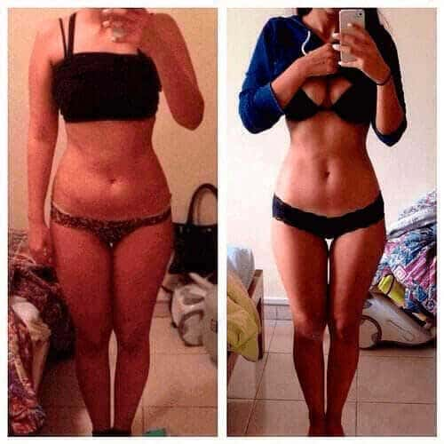
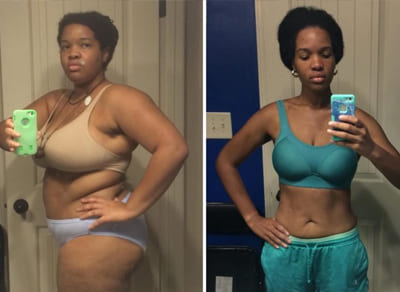

تخلص من 25 كيلو فالشهر: حارق دهون جديد كيخدم حسن من شفط الدهون
"اليوم، الناس يقدروا يخسروا الوزن بسهولة وبشكل آمن"، أخصائيو التتغدية المعروفين عندهم رأي واحد ،خليي فبالك، هدشي مكيعنيش عملية ولا رجيم قاسح. هدشي كان فالماضي! و أخيرا، كاينة طريقة باش نقدوا العالم من فائض الوزن أو سميتها !
هدا أحدث مكاين فالعالم ديال التحكم فالوزن. آلتأثيرات لكيوفرها تقدر تقارن غير بشفط الدهون! الدراسات بينات بلي الاستخدام اليومي للتركيبة كتخليك تخسر 10-20 كيلو غرام فالشهر، و هدي هي الدهون الزايدة فالجسم.
؟ شنو هي
منتج طبيعي كيحتوي على حارق دهون قوي كيتكون من فيتامينات ومغذيات. مقارنة مع الماركات الثانية، تركيز ديالهم عالي وهدشي كيعزز التمثيل الغذائي ، وكنتيجة، كيسمح بنقصان كيلوات لي زايدين.
ريجيم قاسح، بحال استعمال حارق دهون رياضي مشي ضروري! لي غدي تحتاجو هي حمية متوازنة، لكتخلي لجسم ديالك يحافظ على معدل تمثيل غذائي عالي.
رأي الخبراء:
اسلام الزقيلي، اختصاصي تغذية، أخصائي الغدد الصماء:
كخبير بتجربة ديال 25 عام، خليني نقولك بلي أشهر طرق التضعيف، مثلا رجيم بسعرات حرارية منخفضة، رجيم أحادي و رياضة بزاف مفيهومش غير الإجابيات! يقدر يخليوك توصل لنتائج مؤقتة، و لكن فلخر أي تغيير فالروتين غدي يؤدي لنتائج معاكسة أو غدي يولي عندك تمثيل غذائي لي بطئ و لي بدورو غدي يدهور صحتك. ولكن، باش تخسر الوزن أو تحافظ عليه خاص تمثيل غذائي يكون سريع بزاف. كيحتوي على مكونات طبيعية لكتسرع التمثيل الغذائي. هدشي كيحفز الجسم باش يستعمل جميع الدهون بالزربة أو ماشي يخزنها. اليوم، هي طريقة الوحيدة الفعالة لخسارة الوزن بطريقة صحية.

جي سبرزا، أخصائي تغذية:
ملي قالولي المرضى ديالي،‘عاونا نخسروا 20 كيلو غرام ’، كان عندي غير جواب واحد،‘ شفط الدهون هو الحل إلى بغيتي نتائج سريعة.’
يوم بالعكس، كنوصي أي واحد باش يخسر الوزن باستعمال . أولا هي آمنة لأي واحد فأي عمر
تانيا، نتائج إجابية مضمونة، بغض النظرالسن ، الحالة صحية، و لا الجنس. معدل خسارة الوزن فسيمانة كيعادل 5ء7كغ. المناطق لكتسبب مشاكلمشل الكرش، الفخذين ، المؤخرة هما لولين لي كيضعافو.'
جبنا ليك نتائج واحد دراسة، لي كانا ممتوقعنهاش:
حاليا، غادا و كتشهر. مكيوصيش بيها غير أخصائيو التغذية ولكن حتى مدربين ديال الرشاقة مشهورين و رياضيين. منتج خدا شهادة خاصة، لكتأكد الدراسات الطبية لدارت فالمختبر ديالنا.
أو دابا الأخبار المزيانة. مركزالصحة و الجمال كيخدم على مشروع متميز باش يعاون ناس لي كيحاولو يربحو المعركة ضد وزن زايد. فهاد المشروع، ناس لي محتاجين ينقصوا الوزن، عندهم فرصة باش يشريو "" بثمن خاص. معندناش النية باش نديروا لفلوس من هاد الماركة، غير بغينا أي واحد، بغض النظر على حالتو المادية يخسر الوزن و يعيش حياة صحية و نشيطة!
المشروع غدي يستمر حتا، الاربعاء,متزكلوش!
اسلام الزقيلي
أميرة, تيقني بلي أنك محترمة الجرعة الموصى بها، المنتج قوي أو تقدي تخسري 20كغ بلاصة 10.
أميرة سرور
لبنات، نقولكم، جربت هاد المنتج، ويلا استعملتيه صحيح، كيعطي نتائج رائعة. ولكن متستخدموهش كتر من لقياس. هدي أنا حاليا!
انجي محمود
لبنات، نقولكم، جربت هاد المنتج، ويلا استعملتيه صحيح، كيعطي نتائج رائعة. ولكن متستخدموهش كتر من لقياس. هدي أنا حاليا!
لوسي علي عادل
للأسف، منقدرش نقول دبا، لحقاش بديت كناخد غير سيمانة هادي. صعيب باش تيق، ولكن ف 7 يام خسرت 3 كغ، باقي غير 18 كغ! نقدر نديرها! خاصني نديرها☺
اسلام الزقيلي
حيدر الزغبي، ممكن تكون مردتيش البال مزيان لتعليمات ملي كنت كتقرا نشرة، رجاءا قراها مزيان، وتبعها بصرامة كيما تعليمات!
داليا البغل
بديت كناخدو، كنكل لي بغيت، وخا هكاك خسر9 كغ. كنعتبر هادا أحسن منتوج جربتو لخسارة الوزن، و لي عجبني كتر انك مخصكش تقتل راسك فلصال، ولي معنديش ليه لا لوقت و لا رغبة. بنسبة لناس لي بحالي هدا مثالي! كنوصي به! هادو نتائج دياولي:
سارة شادي
قبل مناخذ لوزن ديالي كان 90كغ. ملي كنت صغير، كنت ديما رقيق، ولكن معا لعمر ولات عندي لكرش و دهون ديال لخسر. أنا عندي 35 عام، و أدركت بلي خاصني نحسن راسي. كنت كنمشي لصال لمدة عام ولكن مقديتش نرجع لشكل ديالي سابق. ملي جربت و فغضون أسابيع و ليت لسابق عهدي. دبا كنعتني بالجسم ديالي، ديما عندي جوج علب ديال ، كحتياط.
سميرة الزين
ولات منقد ديال حياتي. سنين هدي، درت كسيدة بطنوبيل و مقديتش نتحرك لمدة8 شهور. بقيت فلفراش أو زت 32 كغ! شوي بشويا وليت كنتمشا بعكاكز، و لكن كان مستحيل نبدا ندير رياضة، كنت مزال ضعيفة، و الوزن زايد خلا الوضعية تزيد تكفس. جربت . تغييرات لولا بدات كاتبان فسيمانة. مغديش نقول بلي فقدان الوزن كان مذهل، ولكن بديت كنحس بلي الجسم ديالي ولى كيخدم أسرع، كيهضم ماكلة دغيا إلخ. أنا فرحانة و ممتانة لصاحبي لكتشف .
شادية عزت
نقدر نهضر غير على راسي و لكن خدم مزيان بزاف. كنبان عليكم؛) خسرت 16 كغ فسة ديال لأسابيع. كنحاول نبقا هكا؛)
شروق الشارد
علاش متحبسش لماكلة؟ ملي كنكونوا أطفال- كتكل كيما كيتقلك، ولكن منين كتكبر...علاش متقدروش تحكموا فريسكوم و ببساطى تحبس من الماكلة؟
اسلام الزقيلي
شروق الشارد، باش يكون فراسك، كاينين شي ناس جينيا عرضة لزيادة الوزن، رجيم و أدوية بلا فايدة فهاد الحالة. إلى مكنتيش عرضة لزيادة فالوزن، مزيان! ولكن كنأكدلك ماشي كاع ناس محظوظين بحالك. تحياتي.
شيرين سعد
تفاجأت ملي ذكرتي بلي كيعرفوه غير أخصائيين تغذية. كناخذو لمدة عماين. عاوني باش نخسر 14 كغ. دبا كناخذو باش نحافظ على نتائج إضافة لأنو غني بالفيتامينات و المغذيات.
كاميلا عيد
علاش كلشي باغي يكون معيار؟ علاش خاص كلشي يكون رقيق؟ كنوزن 79 كغ، و طول ديالي 167سم و معنديش مشكل مع هدشي. كيعجبني شكل ديالي، و كنحس براسي مزيان بزاف!
اسلام الزقيلي
مشكل هو أن معايير القرن 21 كتخلي لبنات ياخدوا خطوات بالغة و يبانوا بحال العارضات، وهاد طرق بالغة كتأثر على صحتهم. هادشي علاش صنعنا المنتج لي كيسمح بنقصان الوزن بكل آمان. تحياتي
لوسي علي
بنات! خاصني ضروري نخسر 18كغ!!!!!!!! بقيت فدار مدة ست شهور و هكدا زت الوزن. عاونوني، مايداي!!
اسلام الزقيلي
رو، هدشي بصاح. صيدليات كيحولوا يديروا لفلوس على ظهر ناس فحين حنا باغيين نحلوا مشاكيلهم صحية. أطباء رفضوا يبيعوه بأرباح إضافية، دبا خصنا نبيعو عبر الانترنت باش نتحكموا فتامن و نخليوه متاح لكلش. تحياتي.
نادية يحيى
مراتي كتعاني باش تخسر الوزن. ملي تزوجنا، كانت كتوزن 53كغ، ولكن دبا 68. لأسوأ أنها مكتشوف حتا شي مشكل فهدشي. عندك لحق، ملي كتولف الوزن جديد كيولي يبان عادي جدا.
اسلام الزقيلي
دارين – بصح، ولكن إلى كانت مشكل بالنسبة ليك، تقدر تعطيها ، مشي طريقة لي لبقة، ولكن على الأقل غدي تفاجأ كيفاش كتخسر الوزن بطريقة سهلة أو سريعة. و كتخدم حتى مكمل غذائي ديال الحمية. تحياتي.
نانسي
كنخد مدة هدي. كان عندي وزن زائد، ولكن كلو مشا دبا، نقدرناكل كلشي، ولا بديتك نزيد الوزن، غدي ناخدو واحد دورة أو نرجع لفورما.
اسلام الزقيلي
نانسي- نصيحتي ليك- تبعي مخطط حتى لخر و غدي تبقا لمدة طويلة، أملي تكوني كديرها، لتزمي بحمية متوازنة. تحياتي.
نسمة صبري
كنوزن 97 كغ. أو معرفاش كيفاش نتخلص منهوم. مبغيتش نوصل ل100 كغ. شنو نقدر ندير؟؟؟؟؟ عاونوني!!!!!! واش نقدر نشري من "الفرمسيان؟؟؟؟؟؟"

نورا الكافي
نسمة صبري، تقدر تجربو بكل تأكيد و تشوف شنو غدي يطرا، ولكن راه شفتو غير فالموقع رسمي ديال لمصنع و هدي أكتر طريقة موثوق فيها.
اسلام الزقيلي
نسمة صبري، متخافيش، ممكن يتصلح. حاليا، للأسف، مكينش فلفرمسينات لأسباب تذكرات من قبل.طلب من الانترنت و تخدو كيما مذكور إلى بغيتي تحصل على نتائج المرغوب بها. تحياتي.
نيرمين علي
سلام، أنا عندي 50 عام وكنحاول نخسر الوزن. عارفا بلي لعمر كيصعبها، ولكن أنا راسي قاسح. قررت نجرب و طلبت الحصة ديال . فظرف أسابيع قليلة طلبت وحدا خرين لحقاش حصلت على نتائج مثيرة للإعجاب! خسرت 6 كيلو!!فنفس الوقت، حاولت نحافظ على رجيم مناسب و رياضة، و لكن هاد نتائج وخا هكاك مفاجأة مزيانة بزاف. شكرا على المقالة. كنوصي بزاف ب .
يسرا تمارة
أنا فرحانة بزاف أنني لقيت هاد المقالة. كنت غدي نترك محاولة نحصل على جسم رقيق. بديت كناخد سيمانة هدي. ست ديال كغ مشاو. مزال عندي نفس طريقة العيش، كنكل نفس لماكلة كيقبل، وخا قللت الكمية. شهيتي لكبيرة مشات، مبقيتك نبغي ناكل شي حاجة لوقت كامل. معرفتش شكون لي صايب هاد تركيبة رائعة ولكن شكرا!
أميرة
إحساس زوين ملي كتبغي شي حاجة بزاف، ولكن مستحيل تحققها. ولكن فاش كتحصل عليها أوكتبان معجزة. خسرت 10 كيلوات التزامنا بنفس روتين. أصدقائي مذهولين، كيسحبلهوم بلي أنا دايرة حمية صارمة، و قلقنين علية. مكنقول والو، خليهوم يخمنوا)))))
أميرة
أكيد غدي نجربو و غدي نرجع باش نقول النتيجة. غدي نبدا نقرا فالجامعة قريب، أو بغيت نبدا حياة جديدة بشكل جديد. فالمدرسة كنت كنتعرض لتنمر من دراري لي كانوا كيقولولي دبوزة. غدي نخسر 10كيلو و غدي نولي الملكة ديال القسم!